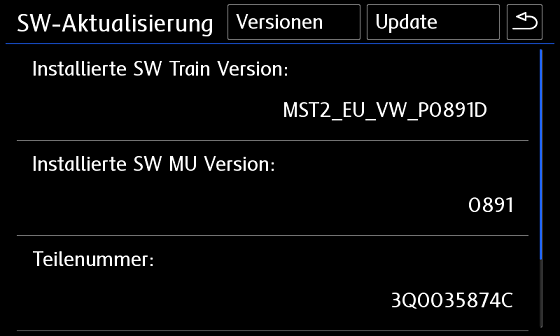
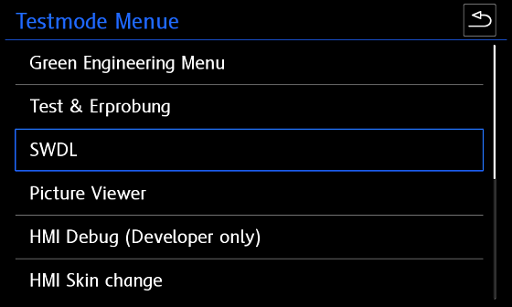
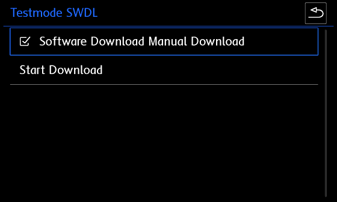
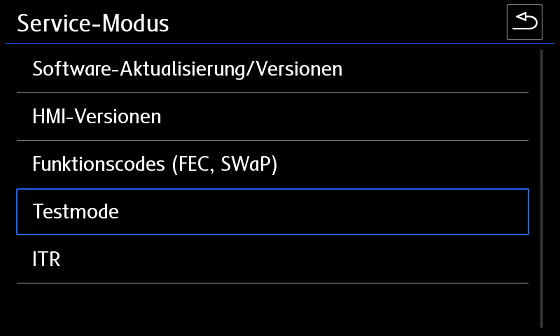
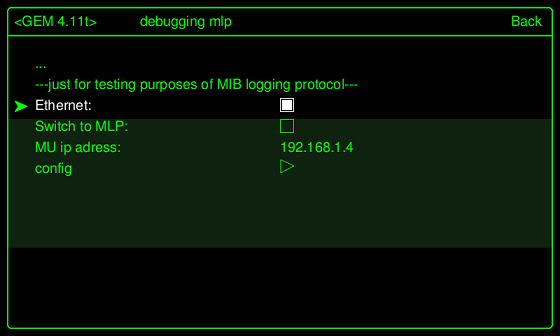

SWAP коды и параметрии для Composition Media и Discover Media¶
Warning
ВСЕ, ЧТО ВЫ БУДЕТЕ ДЕЛАТЬ — ВЫ БУДЕТЕ ДЕЛАТЬ ТОЛЬКО ПОД СВОЮ ОТВЕТСТВЕННОСТЬ! ЕСЛИ НЕТ УВЕРЕННОСТИ — НЕ НАЧИНАЙТЕ!
Голосовой помощник, MirrorLink, Bluetooth и Спорт-монитор для Delphi устройств¶
Что необходимо¶
- USB-Ethernet адаптер:
Предпочтителен: d-link dub e 100 ревизий b1(серебристый), с1, d1
или https://aliexpress.ru/item/32969701309.html?spm=a2g0s.9042311.0.0.3b9d33edZKppDb&sku_id=12000018080745527
работает без танцев с бубном, так сказать из посылки или другое устройство с чипом ASIX 88772 - Прошивка магнитолы
- SWAP магнитолы
Информация о ГУ¶
Как распознать модуль Delphi?
Модули Delphi - это всегда стандартные устройства, а не устройства высокого уровня.
Соответственно, Delphi Unit всегда является Discover Media, а не Discover Pro.
Все модули Delphi являются устройствами Discover Media, но не все устройства Discover Media являются модулями Delphi!
Discover Media также может быть устройством Technisat Preh - просто для справки.
Чтобы распознать устройство, не снимая его, необходимо удерживать кнопку «МЕНЮ» на радио в течение длительного периода времени, пока не откроется другое меню.

В этом меню в пункте «Обновление / версии программного обеспечения» можно увидеть версию программного обеспечения.

(Delphi) SW Train Version (MST2_ЕС_VW_P0891D) - формируются следующим образом:
MST2 = MIB2 стандартного устройство
ЕС = Европейский вариант (аналог этого США)
VW = марка автомобиля
0891 = Firmware 0891
D = Delphi Краткая версия модуля
Если в конце версии SW Train стоит буква D, значит, у вас есть модуль Delphi.
Если вы видите PQ или ZR после марки автомобиля или букву T в конце в версии SW Train, значит - у вас устройство Technisat Preh.
Прошивка устройства¶
Только прошивка 0891 позволяет соединиться с MIBII по Ethernet-USB (по нашей информации)
Для прошивки магнитолы понадобится:
- SD Card
- Прошивка Delphi устройств (Скачать)
- Активированное инженерное меню (Инструкция)
Обновление ПО MIBII
1. Отформатируйте SD-карту в FAT32
2. Скопируйте файлы обновления прошивки на SD-карту (в корне должно быть 3 папки и текстовый файл после распаковки архива)
3. Вставьте SD-карту в слот для SD-карты 1
4. Удалите все остальные SD-карты и USB-устройства!
5. Нажимайте на магнитоле кнопку MENU и дольше, пока не откроется другое (сервисное) меню
6. Выберите там тестовый режим

7. Перейдите в категорию «SWDL»

8. Активируйте загрузку программного обеспечения Загрузка вручную и нажмите «Начать загрузку»

9. Выберите источник (SD-карта), выберите все и запустите обновление прошивки

На что следует обратить внимание при обновлении прошивки?
Оставьте зажигание включенным.
Отключите ненужных потребителей (свет, вентиляция, ...)
Подключите зарядное устройство ( мощность зарядки не менее 15 А, лучше 20 А и больше)
В зависимости от устройства (RAM / CPU) обновление занимает от 20 до 60 минут
После обновления прошивки на панели будет мигать глонасс — это нормально, не бойтесь.
Так же может появиться ошибка "Подтверждение изменения по установке" - нужно будет подтвердить обновление прошивки кодом.
Блок 5F → Адаптация
> Подтверждение изменения установки (Confirmation of installation change)
Код из адаптации нужно внести в XOR генератор (http://mib-helper.com/im-so-xory/) и получить ответный код
> Ввести полученный код и подтвердить изменение
Активация Telnet соединения¶
Чтобы установить соединение Telnet, необходимо активировать Ethernet в зеленом меню.
Для этого зажмите кнопку МЕНЮ на магнитоле до тех пор, пока не появится (сервисное) меню. Затем перейдите в тестовый режим

Теперь мы можем переключиться в Зеленое (Инженерное) меню
(по желанию вы также можете попасть туда, нажав на кнопку МЕНЮ очень долго)

Переключитесь в категорию «debuggung mlp».

Активируйте Ethernet и перезапустите устройство
(удерживайте кнопку питания не менее 10 секунд).

После перезапуска агрегата необходимо активировать «Switch to MLP».

Теперь адаптер USB-LAN можно подключить к USB-порту в автомобиле и подключить к ноутбуку с помощью кабеля LAN.
Если светодиоды на адаптере загораются, подключение и настройка IPv4 выполнены успешно (Настройки адаптера Ethernet IP - 192.168.1.10).
Запускаем программу Putty. IP-адрес MU берется из зеленого меню в качестве IP-адреса.
Случалось, что IP-адрес MU не отображался на некоторых устройствах, но он всегда использовался 192.168.1.4 и в качестве порта - 23, а затем нажимали «Открыть».
Если все настроено правильно, вы можете сказать по логину QNX Neutrino, что он работает.
Для входа в Delphi Units требуется только пользователь «root».

Как только появится приветствие, можно будет вводить команды.

Команды:
cp - копировать
rm - удалить
chmod - изменить права (например, chmod 777= полные права чтения / записи)
mkdir - создать каталог (папку)
mount - монтировать путь
umount - размонтировать путь монтирования
Атрибуты:
-f - принудительно (перезапись / принудительно)
-R - рекурсивный (например, папка с содержимым и копировать / удалять подпапки)
-t - Запрос монтирования / особый тип (например, за которым следует qnx6)
-u - обновление (повторное монтирование)
-V - индикатор выполнения
-w - права чтения / записи (при монтировании)
Для удобства 3 скрипта (для запуска их необходимо поместить на корень флешки)
1. Бэкап (MST2_backup.sh)
2. Патч FEC кодов (MST2_fec.sh)
3. Патч SWAP (MST2_patch.sh)
Резервная копия MIBII¶
Вставьте (пустую) SD-карту в слот 1 и выполните следующие команды через Putty.
-
Монтируем SD карту
cd / && mount -uw /sdc1/ -
Запускаем скрипт Backup (MST2_backup.sh)
cd / && /sdc1/MST2_backup.sh -
Должны увидеть:
# MST2_backup.sh ROOT access — OK Making backup dir on SD Card — OK mkdir: /sdc1/backup: File exists SWaP *.fec files backup — OK backup /ffs/etc/* — OK cp: Can't create FIFO file (/sdc1/backup/script.fifo) delphibin.ifs backup — OK InstallationManager backup — OK SWaP engine backup — OK cp: Dest (/sdc1/mst2_patch.sh) must be a dir to copy dirs or multiple files to it. profile backup — OK MHConfig.cfg backup — OK fs0 backup — OK Saving unit info to file — OK emmc serial numbler — SAVED FINISHED — You can now remove SD Card
Обновление FEC файла¶
После выполнения бекапа, на флешке в папке pg появится файл *.fec.
С помощью MIB2 Delphi FEC Generator XTR3M3 (M2DFGX16) патчим этот файл,
а именно отмечаем все пункты которые вам нужны и сохраняем отдельно пропатченный fec файл.
Важно
Если у вас с завода активированы коды App Connect, MirrorLink и т.д., и во время патча файла fec вы их не отметите, то после заливки в магнитолу их у Вас не будет.
Если у Вас магнитола без навигации, то отмечайте все пункты, кроме навигации
Доступные FCC
fsc = "00030000" # AMI
fsc2 = "00030001" # Gracenote
fsc3 = "00040100" # Navigation
fsc4 = "00050000" # Bluetooth
fsc5 = "00060100" # Vehicle Data Interface
fsc6 = "00060200" # Skoda/Audi Connect, VW CarNet
fsc7 = "00060300" # Mirror Link
fsc8 = "00060400" # Sport HMI
fsc9 = "00060500" # Sport Chrono
fsc10 = "00060600" # LogBook
fsc11 = "00060700" # Online Services
fsc12 = "00060800" # Apple CarPlay
fsc13 = "00060900" # Google Android Auto
fsc14 = "00070100" # SDS
fsc15 = "00070200" # SDS for Nav
fsc16 = "00070400" # Digital Voice Enhancement
Активация SWAP кодов¶
SWAP файлы. Данные коды содержат в себе все существующие SWAP коды для ГУ
| Тип | Ссылка |
|---|---|
| STD2 | (SWAP) |
| PQ STD2 | (SWAP) |
| NAV | (SWAP) |
| PLUS | (SWAP) |
Для загрузки SWAP кода необходимо взять нужный файл, а так же созданный на предыдущем шаге FEC файл и загрузить в корень флешки.
Вставьте SD-карту в слот 1 и выполните следующие команды через Putty:
-
Монтируем SD карту
cd / && mount -uw /sdc1/ -
Запускаем скрипт (MST2_patch.sh)
cd / && /sdc1/MST2_patch.sh -
Должны увидеть:
# mst2_patch.sh ROOT access — ok SWaP patch — ok cp: Copying /sdc1/SWaP to /home/mmc0t177_tmp/apps/bin/SWaP 100.00% (xxx/xxx kbytes, xxxx kb/s) FINISHED — You can now remove SD Card -
Перезагружаем магнитолу долгим нажатием на кнопку включения — ОБЯЗАТЕЛЬНО!!!!
-
Монтируем SD карту
cd / && mount -uw /sdc1/ -
Запускаем скрипт Патч FEC кодов (MST2_fec.sh)
cd / && /sdc1/MST2_fec.sh -
Должны увидеть:
# MST2_fec.sh ROOT access — ok *.FEC installation — ok mkdir: /home/mmc0t180_tmp: File exists FINISHED — You can now remove SD Card -
Перезагружаем магнитолу долгим нажатием на кнопку включения — ОБЯЗАТЕЛЬНО!!!!
Если по каким либо причинам не получилось, значит Вам не подошел SWAP файл, пробуйте другой SWAP
Может случиться так, что файлы FEC все еще находятся в буфере в устройстве и все еще доступны после перезагрузки.
Их, возможно, придется удалить несколько раз, пока они не станут недоступны в устройстве после перезагрузки.
rm -RVf /Persistence/SWaP/ppw/
rm -RVf /Persistence/SWaP/illegal/
После этого можно импортировать исправленный файл FEC.
cp -VRf /sdc1/*.fec /Persistence/SWaP/pg/
После ввода команд обязательна полная перезагрузка.
Warning
После всех действий обязательно проверьте работоспособность ГУ.
Проверьте сканером на наличие ошибок, и удалите их если появились.
Электронный усилитель голоса ICC¶
Для активации данного усилителя необходимо загрузить параметрию:
(Параметрия под ODIS)
После загрузки параметрии нужно ОБЯЗАТЕЛЬНО перезагрузить магнитолу долгим нажатием на кнопку включения!